ИСТОРИЯ ЕВРОПЫ
с древнейших времен до наших дней
Том первый. Древняя Европа
Иллюстрации к I части
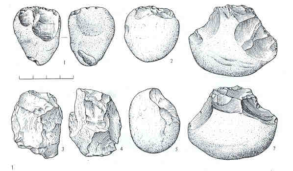
Рис. 1. 1. Пещера Шандалья I. Истрия, СФРЮ. Чопер, найденный в костной брекчии. Возраст находки - около 1,6 млн. лет. 2-5. Пржезлетице, ЧССР. Чопер и другие орудия из остатков лагерных стоянок древнего человека. Возраст находки - от 750 до 890 тыс. лет. 6-7. Реальмонте, Сицилия. Чоппинги.
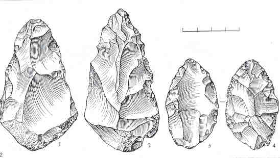
Рис. 2. 1. Мадонна дель Фредо, Италия. Миндалевидное Ручное рубило аббевильского типа. 2. Ашельское ручное рубило. 3-4. Ручные рубила развитого ашельского типа.
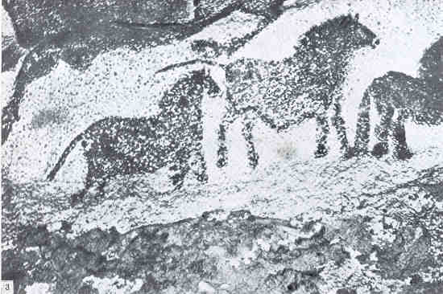
Рис. 3.
Пещера Ласко, Франция. Изображение диких лошадей. Ориньяк-Перигор.
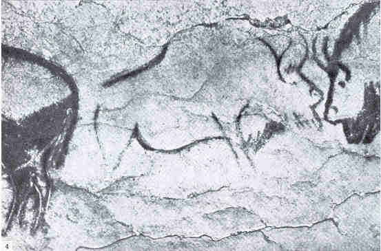
Рис. 4.
Пещера Ле-Портей, Франция. Изображение двух бизонов. Мадлен.
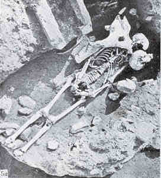
Рис. 5. Лепенски Вир, СФРЮ.
а. Погребение взрослого мужчины.
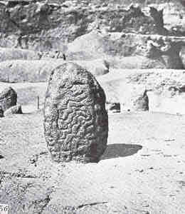
Рис. 5. Лепенски Вир, СФРЮ.
б. Поселение Iв. Алтарь из святилища в доме 54. Поздний мезолит - протонеолит.

Рис. 6.
Лепенски Вир, СФРЮ. Каменная скульптура из святилища XLIV. Первый монументальный "портрет". в истории изобразительного искусства. 52 x 33 см. Протонеолит. Первая половина VI тыс.
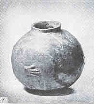
Рис. 7.
Лепенски Вир, СФРЮ. Поселение IIIа. Сосуд с рельефным изображением четырехпалой руки.
Культура Протостарчего. Ранний неолит. Конец VIтыс.
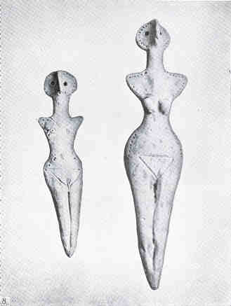
Рис. 8.
Выхватинцы, Молдавия. Женские антропоморфные фигурки из позднетрипольского могильника.
Энеолит. Вторая половина (середина?) III тыс.
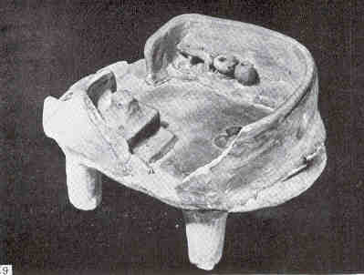
Рис. 9.
Сушковка, Украина. Глиняная модель части трипольского дома. Трипольская культура. энеолит. Начало III тыс.
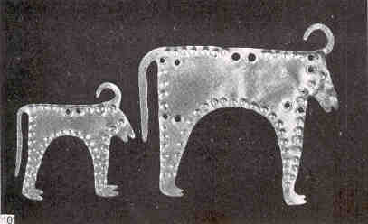
Рис. 10.
Варна. Болгария. Золотые бляшки - изображение коровы с теленком. Энеолит, культура Варна. IV тыс.
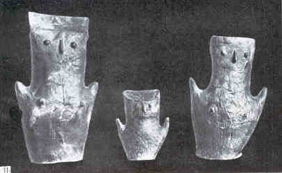
Рис. 11.
Центер у г. Озд, Северная Венгрия. Антропоморфные урны, содержавшие пепел и кальцинированные кости женщины 36 - 50 лет из одной могилы. Баденская культура I III тыс.
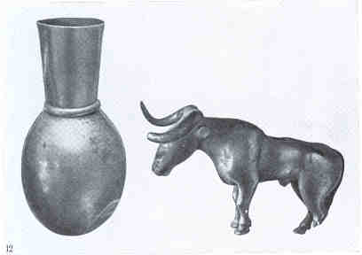
Рис. 12.
Майкопский курган. Золотой сосуд и серебряная фигурка быка. Майкопская культура III тыс.
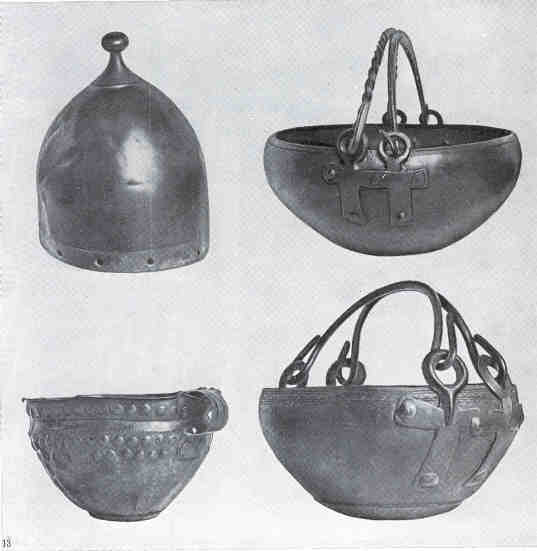
Рис. 13.
Хайдубёсёрмень, Венгрия. Бронзовый шлем и сосуды из клада. Поздний бронзовый век, культура Гава. Конец II - начало I тыс. до н.э.